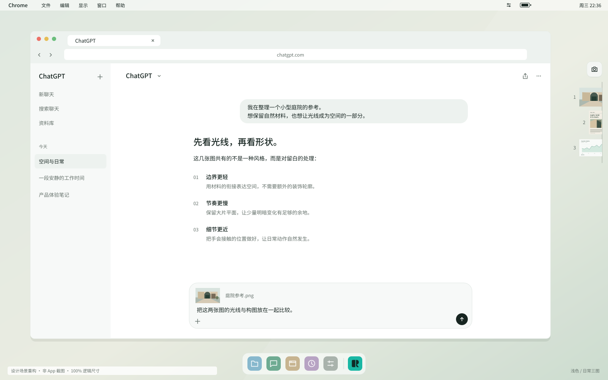
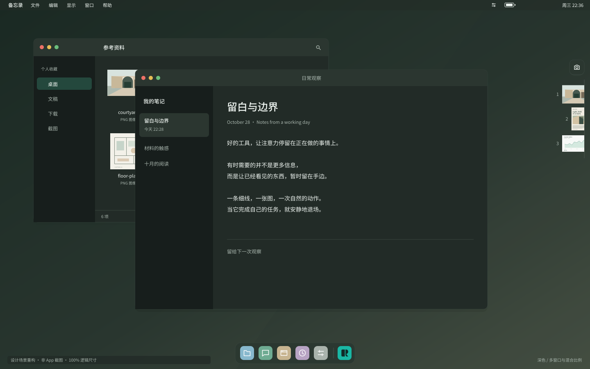
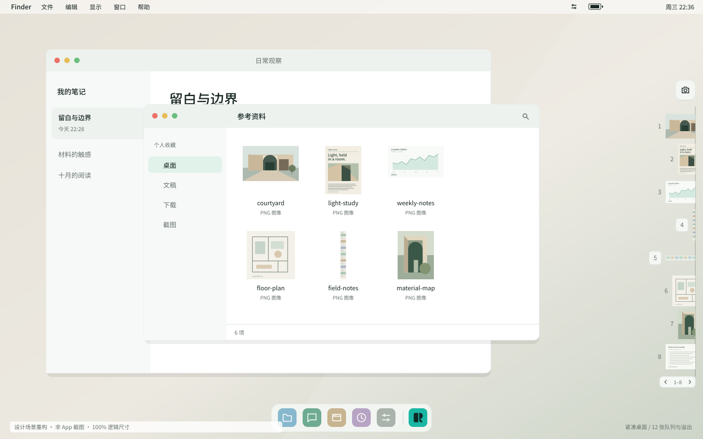
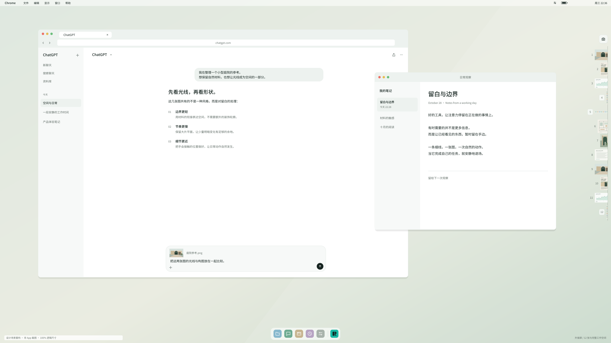
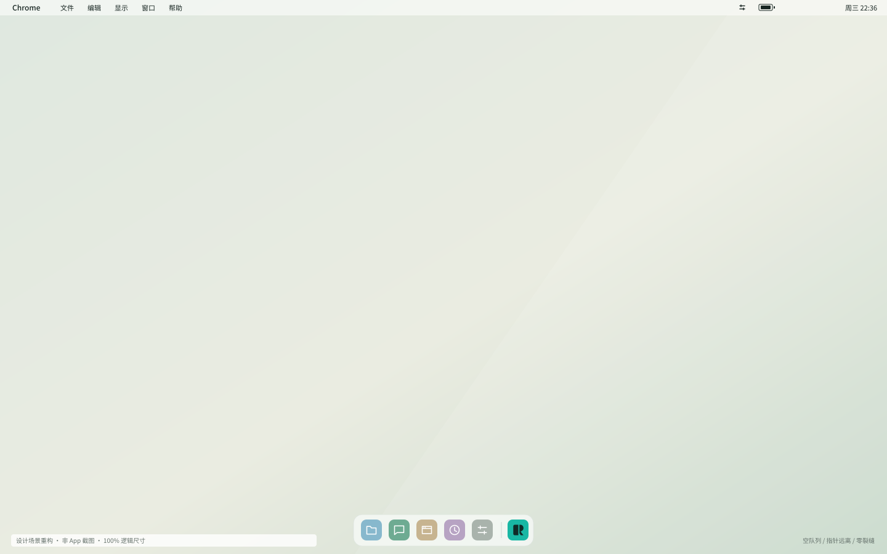
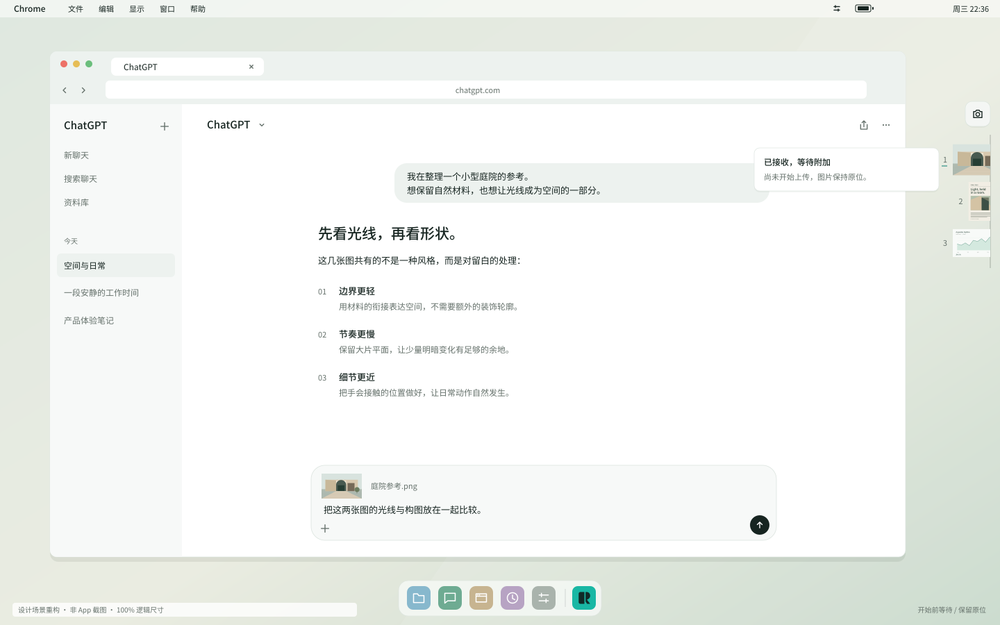
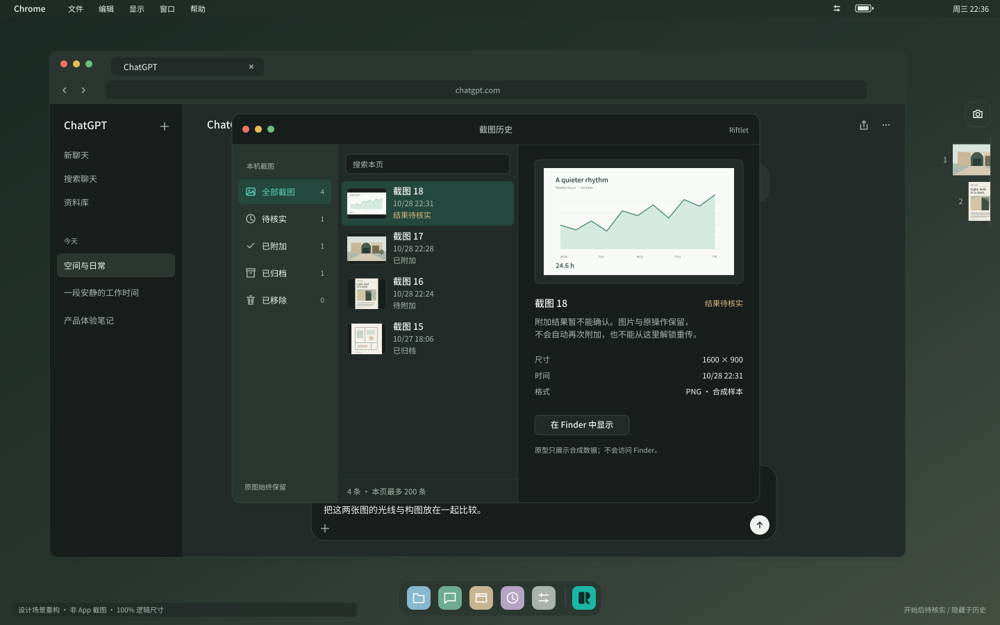
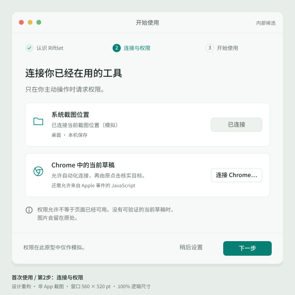
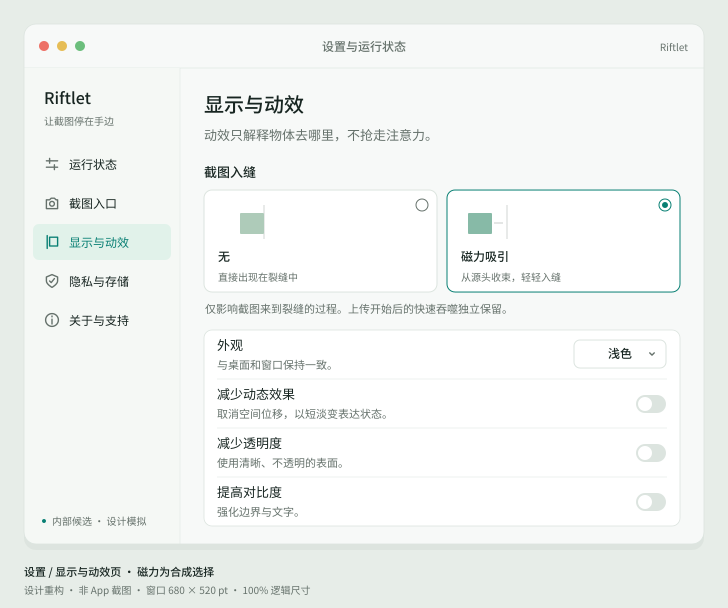
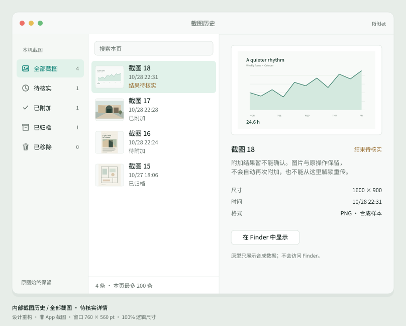

让截图停在桌面边缘。让动作有因果，让界面退后。
最终推荐方向，新视觉待创始人审阅。所有桌面、截图和事件均为合成；不是正式App截图、真实上传证据或原生材质验收。文件离线工作，不连接服务。
在交互原型里靠近右缘、切换截图模式、生成合成截图，再点击微图。设置保留「无／磁力吸引」；开始与完成分开；历史、反馈和辅助功能均可操作。底部评审控件不属于产品UI。
默认适应列宽用于看构图。点「100%原尺寸」后，每个图像像素对应一个设计逻辑点；大桌面可在卡片内滚动。四张窗口图外侧24pt留边与字幕不计入窗口尺寸。
当前：适应卡片。请勿用缩略图判断点击区域大小。










1440×900逻辑画布、60fps。影片本身没有镜头放大；播放器自适应缩放不改变规格。查看100%原帧和分镜请打开motion目录。
560ms四相：凝缩、微颤、定向加速、遮挡交接。源信息无效时静态降级。
120ms吞噬和160ms补位。独立完成留在后台；最后一张退出后无裂缝。
180ms展开，100ms盖片移动。截图完成不退出；用户主动取消。